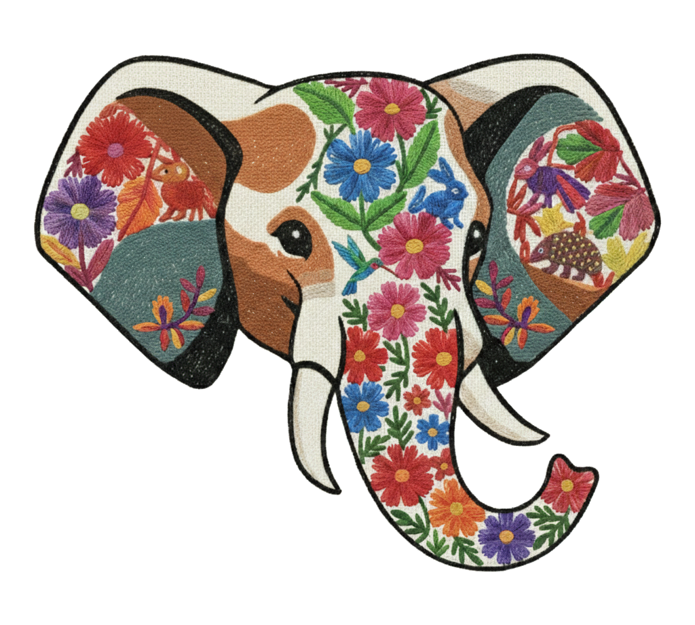

Petra
A different clipboard
for Linux.
Un portapapeles diferente
para Linux.
Support for copying and pasting text, images, links, console commands, and emojis with a minimalist interface. Soporte para copiar y pegar texto, imágenes, enlaces, comandos de consola y emojis con una interfaz minimalista.
Select your Linux distribution: Selecciona tu distribución de Linux:
Petra is a powerful and versatile clipboard manager that allows copying and pasting a wide range of content, including text, images, links, console commands, and emojis. It features a robust search mechanism that lets you filter by copied item type or perform general searches, even by emoji. Petra es un gestor de portapapeles potente y versátil que permite copiar y pegar una amplia variedad de contenido, incluyendo texto, imágenes, enlaces, comandos de consola y emojis. Cuenta con un mecanismo de búsqueda robusto que te permite filtrar por tipo de elemento copiado o realizar búsquedas generales, incluso por emoji.
Built for speed and efficiency, Petra offers complete keyboard navigation using q, w, ctrl+f, esc, and arrow keys, alongside visual conveniences like image previews and the ability to open links directly in your browser. Construida para la velocidad y la eficiencia, Petra ofrece navegación completa por teclado usando q, w, ctrl+f, esc, y las teclas de flecha, junto con comodidades visuales como vistas previas de imágenes y la posibilidad de abrir enlaces directamente en tu navegador.
Customize your experience with a wide variety of themes and colors, choose to open the app on the left, right, or near your mouse position, and set your preferred keyboard shortcut. Personaliza tu experiencia con una amplia variedad de temas y colores, elige abrir la app a la izquierda, derecha o cerca de la posición del mouse, y configura tu atajo de teclado preferido.
With additional options to pin the window, start on system boot, and manually save, delete, or clear all items, Petra adapts entirely to your workflow. Con opciones adicionales para fijar la ventana, arrancar con el sistema y guardar, eliminar o limpiar todos los elementos manualmente, Petra se adapta completamente a tu flujo de trabajo.